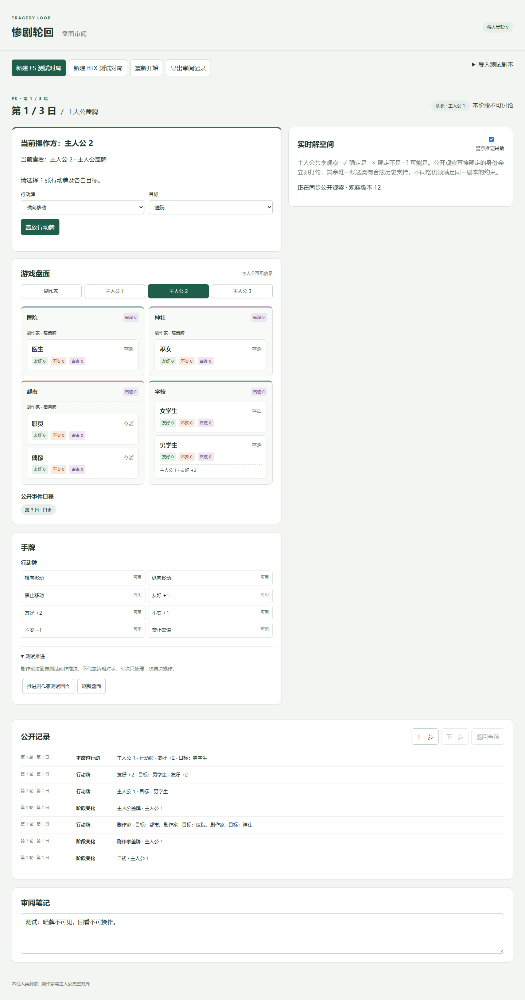
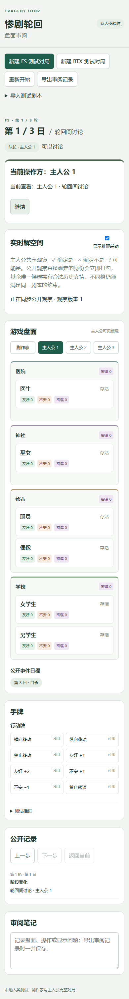

TRAGEDY LOOP · 2026-11-14
游戏盘面与双方人类操作
重建人类测试界面，连接当前规则内核。自动检查已完成，待人类验收。
整局实时解空间
桌面操作区旁显示主人公共享观察对应的角色身份、事件当事人和规则候选。新观察正在同步时显示等待状态。切换剧作家席位仍使用公开推理；回看历史按观察版本取数。
自包含 HTML 通过 13 项断网 Edge 测试，开发服务入口通过 17 项浏览器测试。两种入口均实测从官方 FS 和 BTX 开局到胜负，四席手动操作，终局候选表对应最后一条公开观察。另用含神灵、转校生和伪造事件的剧本验证开局前的公开事件与特殊规则、剧作家完整名册，以及三个主人公席位和历史盘面的信息边界。前端构建、服务类型检查和 10 项接口回归通过。人类验收待进行。
启动
当前版本已接入剧作家与三名主人公的原有操作端口。盘面上方显示当前操作方，并提供切换按钮及引擎返回的可选操作。剧作家可手动盖三张牌、发动能力、选择目标及回应；主人公可盖牌、使用能力、投票和完成最终回答。无需固定测试推进即可完成对局。
本次验证记录：构建与服务回归、双方完整对局浏览器回归、引擎、契约及内容源码不变校验。下方旧批次结果仅作回溯；人工验收仍待进行。
FS-01G 与加载窗口修复验证：8 项服务／规则检查通过、6 项浏览器回归通过，覆盖连续刷新、重新开局、无浏览器弹窗／额外页面和真实对局结束。
当前 FS 测试局为官方 FS-01G《初学者剧本》：3 轮、每轮 3 天、6 名角色，第 3 天自杀。
官方 BTX 配置更新验证：7 项服务与规则回归通过、5 项本地文件浏览器测试通过。医院事故触发条件与结算、7 人盘面、公开事件表、重新开始保留 BTX 均已检查。
当前 BTX 测试局：官方 BTX-01G《魔法少女万能论》，4 轮、每轮 5 天、7 名角色，含关键人物，第 3 天医院事故。使用完整官方配置；原 3 人简化测试局已替换。官方目录出处；配置正文核对仓库已有官方来源快照与固定回放剧本。新建和重新开始均使用该配置，主人公界面不暴露身份。
本地文件模式已通过 5 项桌面／移动浏览器测试及 6 项服务与分层边界回归。证据：file:/// 浏览器测试、构建与接口检查。人类视觉验收仍待进行。
双击根目录的 tragedy-test-ui.html。引擎、官方内容和求解器随文件交付，浏览器在本地 Worker 中运行对局。页面刷新后可重新开局。
分层边界
React 界面 → 双方席位视图与操作 → 离线 Web Worker 或开发用 Fastify 服务 → TypeScript 引擎
| 层 | 职责 |
|---|---|
| apps/web/src | 布局、中文标签、输入控件、公开记录、回看和笔记。只导入契约类型；不计算合法性、移动、计数或胜负。 |
| apps/server/src/review.ts | 持有引擎会话，按席位调用现有 mastermind / protagonists 的 view、submit 端口。turn 接口仅返回操作方、决策类型、阶段和结束标记，不返回秘密选项。剧作家秘密仅通过剧作家端口返回；主人公端口维持原有可见性。 |
| packages/engine / contracts / content | 现有执行内核、玩家接口和官方内容包。本任务未修改这些实现。 |
本工具允许同一测试者切换剧作家和三名主人公，未实现账号认证和多人对战隔离。剧作家席位显示非公开剧本信息；交给主人公前应切换席位。各席位历史分开保存，主人公导出排除剧作家历史。
本次保留与清理
| 保留 / 重建 | 本次移除 / 延后 |
|---|---|
| 四区域盘面与远方、角色状态、指示物、暗牌、事件日程、轮日与队长；双方手牌及行动；能力和选择回应；最终回答；席位记录、只读回看、JSON 剧本粘贴/文件导入、笔记与公开记录导出。 | AI 剧作家、模型配置与诊断、全知调试与内部审计、批量压测、原型快捷指令及内嵌旧引擎。人类剧作家操作保留；旧格式存档不迁移。 |
默认采用官方 FS-01G，也可新建 BTX-01G。固定测试推进仅为保留的辅助入口，不是完整对局必经步骤。导入其他剧本会通过当前规则内核校验，其他模组完整体验尚未逐一验收。
自动验证
| 检查 | 结果与覆盖 |
|---|---|
pnpm check:review |
前端 TypeScript 和 Vite 生产构建、服务 TypeScript；7 项回归通过。包括双方端口、操作方元数据、主人公视图隔离、错误席位与过期操作拒绝、重复请求、官方 FS/BTX 配置和本地文件访问。 |
pnpm test:review:gui |
8 项 Microsoft Edge 自动检查通过，覆盖 FS 3 天和 BTX 5 天双方完整手动流程，均无固定推进请求；剧作家能力与目标选择、主人公友好能力结算、BTX 三人最终回答投票及七名角色回答；主人公导出排除剧作家记录。覆盖桌面、移动、历史回看、重复加载和无推理面板的对局。 |
| 源码边界校验 | 引擎、契约和内容目录共 29 个文件的 SHA-256 与本次修改前一致。本次没有修改或重新实现引擎功能；GUI 自动检查不代表人类验收。 |
补充配置检查：本次新增与修改的代码格式检查通过。根目录 pnpm check 未通过：9
个未改动配置文件存在既有格式问题（pnpm-workspace.yaml、tsconfig.base.json、web/server 的
tsconfig.json、三个 packages 的
package.json、.prettierrc.json、.github/workflows/check.yml）。单独运行 Python
锁检查时，当前命令环境找不到 uv。未修改这些配置或 Python 环境；以上不影响已通过的
UI、服务与内核专用检查。
以下截图是本任务保留的正式验证证据，由浏览器测试生成；不代表人工批准。临时失败截图与报告不作为交付保留。
醒来后的验收顺序
- 点击“新建 FS 测试对局”，检查四个区域、六个角色、指示物和事件日程。
- 主人公 1 点击“继续”；按当前操作方提示切换到剧作家，为三张行动牌选择不同目标并提交。切回主人公后，剧作家盖牌应为暗置牌。
- 依次操作三名主人公盖牌；第三张提交后检查结算后的区域与指示物。
- 按操作方提示处理双方能力、目标选择和回应。可结束阶段继续轮回，或在允许时提议最终回答、投票并逐人回答身份，直到引擎给出最终胜负。
- 点击“上一步”回看，确认禁止提交动作；返回当前盘面后继续。切换席位后各自历史保留。
- 记录视觉、文案与操作问题，导出审阅记录。可导入当前 GameSetup 格式的自定义剧本继续测试。
对局和笔记在当前浏览器会话中保存；刷新页面或重启服务不会恢复。导出文件是当前视角的审阅材料，不是可恢复存档；剧作家导出含秘密信息，主人公导出只含主人公视图。正式多人服务、全模组体验与完整存档另行验收。
桌面检查截图

移动检查截图
